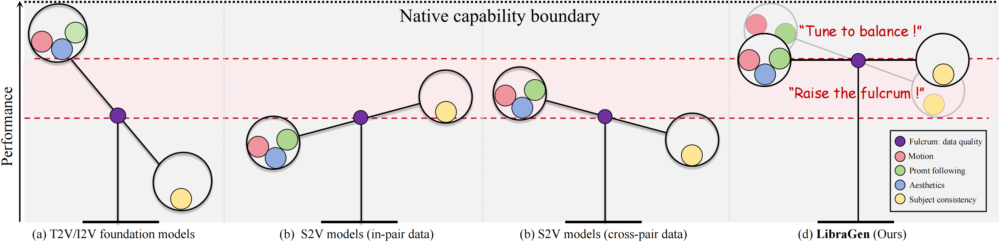
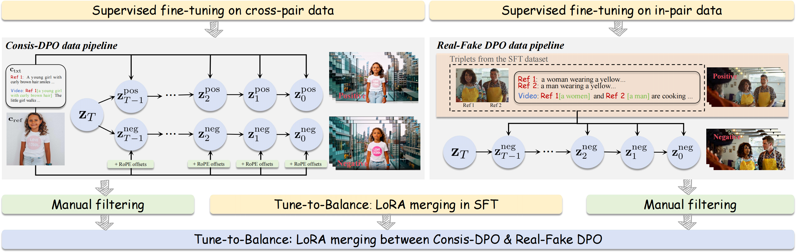

LibraGen
Playing a Balance Game in Subject-Driven Video Generation
Research Paper GitHub
A Balance Game in Subject-to-Video Generation
(a) T2V/I2V foundation models lack task-specific training data and
thus exhibit poor subject-to-video performance. (b) Previous subject-to-video methods trained solely on in-pair data or (c) solely on cross-pair
data often overlook the inherent balance trade-off. (d) LibraGen frames subject-to-video generation as a balance game, achieving
superior and well-balanced performance.

Raise the Fulcrum, Tune to Balance
Raise the Fulcrum. Data quality acts as a critical balancing fulcrum, and its careful refinement can significantly boost overall subject-to-video performance.
Tune to Balance. In supervised fine-tuning, models trained on in-pair and cross-pair data exhibit complementary strengths and weaknesses in subject consistency and foundation model capabilities. We adopt a weighted model merging strategy to make a trade-off. We further design two direct preference optimization pipelines, termed Consis-DPO and Real-Fake DPO, and merge them to consolidate this balance.
Tune to Balance. In supervised fine-tuning, models trained on in-pair and cross-pair data exhibit complementary strengths and weaknesses in subject consistency and foundation model capabilities. We adopt a weighted model merging strategy to make a trade-off. We further design two direct preference optimization pipelines, termed Consis-DPO and Real-Fake DPO, and merge them to consolidate this balance.

Single Subject-Driven Video Generation
Loading...
[The woman with long, wavy brown hair] tilts her head slightly downward. Her red lips lightly touch the cup's rim as she takes a delicate sip of coffee, her eyelashes fluttering gently. A strand of hair on her right side slips down her cheek along with the movement. The liquid inside the coffee cup ripples slightly, and thin steam curls upward from the rim of the cup.
Loading...
[The woman with light brown curly hair] runs her fingertips gently along the curve of her curls. Her gaze slowly shifts from the canvas to the window outside, and her smile softens into a warmer one. The pearl earrings sway slightly with the subtle movement of her head. In the background, an unfinished oil painting on the easel looms faintly in the light and shadow.
Loading...
[The blonde woman with a smile on her lips] stirs the cake batter clockwise. She lifts her left hand to brush away a strand of falling hair, her gaze drifting toward the window. Sunlight draws a soft light-and-shadow line along her profile. The swirling motion creates a gentle vortex in the batter inside the bowl.
Loading...
[The man with braids] slowly turns his head, shifting his gaze from the graffiti wall on the right to look directly forward. His jaw is slightly tilted up, eyes as sharp as an eagle's. His right index finger, still in his pocket, lightly taps against the fabric. The golden braids sway subtly with the movement of his head, and the silver pendant swings gently across his chest.
Loading...
[A young East Asian woman with shoulder-length black hair and metal-framed glasses] stands in the center. She wears a black short-sleeve T-shirt. Her right hand adjusts her glasses, brows slightly furrowed in confusion, leaning forward as if to step. Rows of white lockers line both sides. Warm yellow ceiling lights reflect softly on the tiled floor. A blurred figure passes in the distance at the end of the corridor.
Loading...
[A blond man wearing an open light-green blazer with an unbuttoned shirt collar] sits at the piano,. His hands hover over the black-and-white keys with his fingertips gently touching the edges. He tilts his head, looks at the camera and wears a faint smile. The background lights are blurry, figures move at the bar and glasses glow with amber light. The blond man plays the keys as the melody flows, he turns to the camera with a wider smile and his eyes lift slightly. People in the background raise their glasses and move.
Loading...
[An elderly woman in a red cheongsam] gazes at the blooming pink peonies before her. In the background, white trellises entwined with green vines are visible; sunlight filters through the leaves, casting dappled shadows, and a few petals are scattered on the ground. She slowly squats, her right hand gently touching a peony petal, left hand resting on her knee for support. Her head, once bowed to look at the flower, gradually lifts. As her gaze turns to the camera, her smile deepens, and the wrinkles at the corners of her eyes become softer with the expression.
Loading...
[A woman with long black straight-across bangs] holds the violin neck with her left hand, and her right hand holds the bow above the strings, with part of a tattoo visible on her left shoulder. The background features a gorgeous dark red stage curtain, with golden decorative lights at the top casting triangular spotlights. As she draws the bow, the vibrating strings emit a faint glow; her head sways gently with the melody, her gaze slowly lifts from the violin to the camera, and a smile appears at the corners of her mouth.
Loading...
[A woman with reddish-brown hair in an updo] wears a silver thin-strap camisole. Her green eyes look forward; she holds half a red apple to her lips with her right hand, left hand resting naturally on the wooden table. Blurred coffee cups and green plants in the background. Sunlight shines through the window, forming diamond-shaped light spots on the table. Shallow depth of field keeps the subject sharp and the background soft. She takes a bite of the apple. As her teeth gently touch the skin, the flesh is slightly exposed. Her cheeks move slightly as she chews. Apple juice glistens in the sun. A barista walks from right to left in the background.
Dual-Subject Driven Video Generation
Loading...
Warm-toned atmosphere in a KTV private room. [A black-haired woman wearing a white strappy off-shoulder top] holds a black microphone in front of her mouth, singing soulfully with a focused gaze. Neon lights flicker in the background, and blurred shadows of the sofa and screen create a lively yet private spatial sense. The camera slowly zooms in; [a man wearing a necklace holds a rose], walks slowly towards the woman from the left side of the frame, and hands her the flower. Surprise appears in the woman's eyes, and her singing movement pauses slightly.
Loading...
[A white man] sits in a black wheelchair, his brown curly hair fluttering slightly in the sea breeze. He wears an unbuttoned black blazer over a light blue shirt, with his hands resting naturally on his knees. [A Black man] stands behind pushing the wheelchair. He is dressed in a black knit sweater with a slightly rolled collar, and a stud earring in his right ear glints in the sun. The white man turns his head to look back at him, and both smile, showing their teeth. The blurred coastline stretches into the distance, with golden waves glistening on the sea.
Loading...
[Red-haired woman] in khaki trench coat with naturally hanging hem, reddish-brown low bun with broken bangs. [Blonde man] with light golden curly hair and beard, light green suit jacket with matching shirt, slightly open collar. The two walk side by side in the center of the picture, their eyes meet, the woman smiles slightly, the man has a smile in his eyes, with a busy street background with people coming and going.
Loading...
[A man wearing a bright blue down jacket with the hood up] sits in the car, his head slightly tilted, catching sight of [a flying bird with light purple-blue gradient feathers] from the corner of his eye. The bird's pink blush feathers tremble slightly, and it gently rubs its beak against the man's cheek.
Loading...
[A little anime-style girl with short dark brown hair and straight bangs] steps forward quickly and throws herself into the arms of [an old woman with fluffy white hair, deep blue clothing and a ruby necklace]; the old woman gently pats the little girl's back with her left hand, strokes the hair on the top of her head with her right hand, then slowly turns her head to look at the night scene outside the window.
Loading...
In the classroom, [Nezha] and [Ao Bing] sit side by side in their seats. Nezha frowns slightly and recites the content in the book softly. Ao Bing tilts his head slightly, his gaze gentle and focused, with a faint smile on his lips. He taps the page lightly with his finger and raises his eyebrows gently, looking confident and patient.
Loading...
[A young Black female model with long black hair, wearing a light green strapless top,] holds [a wide-brimmed straw hat decorated with a brown leather belt]. She gently lifts the straw hat above her head with both hands and then places it on her head, adjusting the brim lightly with her fingertips so that the hat just covers her forehead. The background is a blurred outdoor scene with trees and the sky.
Loading...
Renaissance oil painting atmosphere. [A woman with long brown hair] wears [a dark robe and one-piece sunglasses with blue-purple gradient reflections on the lenses]. Her head is slightly raised, her hands are folded, the sunglasses slowly slide down to the bridge of her nose, the blue-purple reflections flicker with the change of angle, and the curvature of her mouth remains unchanged.
Loading...
[A man wearing a dark hat and a black T-shirt printed with white "BELLKEN ORIGINAL"] raises his left arm; [a black dragon] flies towards him from afar and lands on his left arm, flapping its wings, the man looks towards the camera, and the camera rotates around the man and the dragon to showcase their poses.
Loading...
[A blonde girl with double braids wearing a red sports T-shirt] holds [a brown leather baseball cap] in her right hand and a mobile phone in her left hand. She has a slight smile on her lips and looks towards the camera. The background is a blurred green lawn with mottled light and shadow formed by sunlight through the leaves.
Loading...
[A vaporwave-style girl] sits beside a pile of tires, supporting herself on the ground to stand up. There is [a blue vintage sports car with blue-purple neon lights]. Finally, the camera freezes on a panoramic view of the girl standing side by side with the sports car. She turns her head and smiles. The whole scene blends street fashion and retro neon elements, creating a stylish and healing atmosphere.
Loading...
[A woman in a red hat with leopard-print sunglasses and large gold earrings] turns to look at [the Black man in the driver’s seat wearing a light green jacket with leaf embroidery], and they each bring a beer can to their lips and take a sip.
Video Generation Driven by More Than Two Subjects
Loading...
Medium shot of [a woman wearing spherical earrings]. She is dressed in an off-white short-sleeve top printed with "The Sneaker Culture" and light blue ripped jeans, and wears a floral pearl necklace. She faces the camera and appears in the frame. The background is a white wall.
Loading...
Chinese-style scene: [An elderly man with white hair and a long greyish-white beard] sits at a wooden table. On the table in front of him is a [short-spouted teapot painted with patterns of ancient houses and trees], as well as [a turquoise fair cup with ice-crack patterns and gold-trimmed edges]. The elderly man slowly picks up the teapot handle, points the short spout at the fair cup and begins pouring tea.
Loading...
Warm and cozy restaurant atmosphere. [A curly-haired man] holds [a black stone pot filled with rich bibimbap ingredients and a golden fried egg], while on the right, [a black-haired woman with a bun] holds [a glass bowl of ice cream], gently biting the ice cream spoon. The two sit facing each other, the man with a slight smile at the corner of his mouth and the woman with a smiling gaze. Warm yellow lights glow in the background, a wooden dining table is faintly visible, creating a lazy and intimate ambiance.
Loading...
[A boy with short black hair] wears [black leather headphones with wooden-textured earcups]. He curls up in the corner, leaning forward, gripping a [light blue phone] tightly until his knuckles turn white, his shoulders slightly hunched. He slowly leans back against the cold wallpaper, his body trembling slightly at the touch. Tears slide from his reddened eyes and fall down his cheeks. He closes his eyes in pain, his trembling hand slowly rising, fingers spread to cover half his face, revealing his aggrieved eyes and tightly pressed lips. The headphones sway slightly with his head movements. The background is dim and blurry, the wall rough in texture, with high contrast and deep shadows.
Loading...
[3D cartoon-style brown plush doll] wearing a [white sports short-sleeve shirt with a black Nike Swoosh logo] in the center of the chest. The doll's left hand hangs naturally and carries an [LV cylinder bag], with gold metal parts and brown Monogram canvas reflecting light in the sun. It stands on a black skateboard with yellow wheels, leaning slightly forward while sliding, big eyes shining with starlight, mouth raised showing jagged teeth, the background is blurred high-rise buildings and street pedestrians.
Loading...
[A woman with medium-long curly orange-red hair] wears [silver over-ear headphones], curling her legs up on [a large white bed]. She listens to music and sways slightly. [A light brown Chihuahua puppy] lies quietly at the end of the bed. Seablue daylight streams through a round window in the background; the striped bedding shows light and shadow in the sun, and a white table lamp on the wooden nightstand glows with warm light.
Loading...
[A woman] wearing [a red wide-brimmed straw hat] stands on [the black sand beach], holding [a black cat] gently in her arms like a mother holding a baby, with her hair flowing in the wind. The camera slowly pushes forward from a distance, focusing on the woman's face and the cat leaning on her shoulder; the black cat rubs against her affectionately, creating a warm atmosphere.
Loading...
[A white Pomeranian puppy wearing black glasses] sits in the middle of the [back seat of a black convertible car], wearing [a silver metallic baseball cap] with the brim tilted forward and black square sunglasses covering its eyes. Fluffy cream-white fur glows softly in the sun, front paws resting naturally on the edge of the seat, body leaning slightly forward. The background is a blurred urban street, sunlight slanting on the car body creating contrast between light and dark, and the black leather seats inside the car reflect cool-toned light and shadow.
Loading...
A close-up shot of [a young man with dreadlocks] wearing a black turtleneck sweater, carefully putting [a green jewel necklace] on [a woman with long black curly hair]. She stands sideways to the camera, facing left with her head slightly lowered. The background is blurred with faint green plants visible.
Loading...
Medium shot inside [a train carriage]. [A brown-furred monkey wearing a white knit sweater] sits on a green bench, holding [a purple-red cake covered with pink-blue gradient cream and decorated with a standing cherry] in its left hand, with its right hand hovering above [an old computer], and the screen shows a green text interface with a red title. The monkey lowers its head and bites the cake with cream on the corner of its mouth, while typing with its right hand and the text on the screen flickers.
Loading...
In [a bright kitchen with white cabinets, a sink and windows in the background, sunlight shines in]. [A baby panda] wears [a white chef hat], puts its front paws on the counter, and looks at the cake mold on the counter. It picks up the cream stick with its front paws and creams the cake. Then it handles the batter clumsily but seriously.
Loading...
In [a bright sunny scene on an off-white beach, with a blue sea, sky, gray-brown rocks and hazy distant islands in the background], [a young woman with dark brown curly hair and brown tortoiseshell sunglasses on top of her head] stands on the off-white beach, slightly sideways, gently shaking [a cup of milk tea in a transparent plastic cup] with her right hand, [a tulip bouquet] in her left hand swaying gently with the movement, her dark brown curly hair blown slightly by the sea breeze.